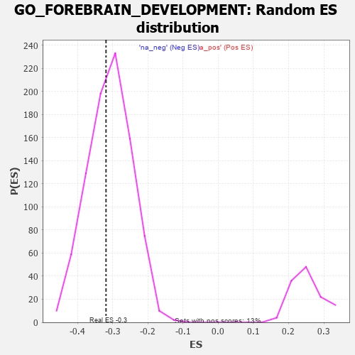

| | | Dataset | 7d |
| Phenotype | NoPhenotypeAvailable |
| Upregulated in class | na_neg |
| GeneSet | GO_FOREBRAIN_DEVELOPMENT |
| Enrichment Score (ES) | -0.31878445 |
| Normalized Enrichment Score (NES) | -1.0331568 |
| Nominal p-value | 0.424 |
| FDR q-value | 0.82223225 |
| FWER p-Value | 1.0 |
Table: GSEA Results Summary
 Fig 1: Enrichment plot: GO_FOREBRAIN_DEVELOPMENT
Fig 1: Enrichment plot: GO_FOREBRAIN_DEVELOPMENT
Profile of the Running ES Score & Positions of GeneSet Members on the Rank Ordered List
| PROBE | GENE SYMBOL | GENE_TITLE | RANK IN GENE LIST | RANK METRIC SCORE | RUNNING ES | CORE ENRICHMENT | | 1 | H2AX | | | 20 | 4.738 | 0.0819 | No |
| 2 | DCLK1 | | | 55 | 2.532 | 0.1227 | No |
| 3 | EMX2 | | | 117 | 1.451 | 0.1409 | No |
| 4 | ARX | | | 322 | 0.782 | 0.1289 | No |
| 5 | BAX | | | 387 | 0.711 | 0.1334 | No |
| 6 | LRP1 | | | 470 | 0.648 | 0.1346 | No |
| 7 | HTRA2 | | | 527 | 0.621 | 0.1385 | No |
| 8 | SRF | | | 542 | 0.615 | 0.1477 | No |
| 9 | HES5 | | | 661 | 0.571 | 0.1429 | No |
| 10 | MYO1D | | | 1099 | 0.464 | 0.0957 | No |
| 11 | SRC | | | 1128 | 0.459 | 0.1003 | No |
| 12 | EMX1 | | | 1143 | 0.455 | 0.1066 | No |
| 13 | NSUN5 | | | 1230 | 0.442 | 0.1036 | No |
| 14 | DOCK7 | | | 1398 | 0.410 | 0.0897 | No |
| 15 | KCNC2 | | | 2075 | 0.295 | 0.0091 | No |
| 16 | UBA6 | | | 2114 | 0.289 | 0.0095 | No |
| 17 | OTP | | | 2209 | 0.275 | 0.0024 | No |
| 18 | WDR89 | | | 2241 | 0.270 | 0.0033 | No |
| 19 | CREB1 | | | 2243 | 0.269 | 0.0080 | No |
| 20 | XRCC1 | | | 2287 | 0.262 | 0.0072 | No |
| 21 | SIN3A | | | 2361 | 0.251 | 0.0024 | No |
| 22 | KDM1A | | | 2447 | 0.237 | -0.0042 | No |
| 23 | NUMB | | | 2519 | 0.224 | -0.0092 | No |
| 24 | SLIT2 | | | 2724 | 0.195 | -0.0316 | No |
| 25 | NR2E1 | | | 2844 | 0.177 | -0.0436 | No |
| 26 | FGFR2 | | | 2895 | 0.167 | -0.0470 | No |
| 27 | WNT4 | | | 3023 | 0.146 | -0.0605 | No |
| 28 | LEF1 | | | 3037 | 0.144 | -0.0596 | No |
| 29 | FEZ1 | | | 3055 | 0.142 | -0.0592 | No |
| 30 | HDAC1 | | | 3086 | 0.138 | -0.0605 | No |
| 31 | LHX3 | | | 3092 | 0.138 | -0.0587 | No |
| 32 | PAX6 | | | 3170 | 0.127 | -0.0662 | No |
| 33 | RFX4 | | | 3334 | 0.099 | -0.0851 | No |
| 34 | KIF1A | | | 3415 | 0.088 | -0.0937 | No |
| 35 | CDK5 | | | 3480 | 0.080 | -0.1004 | No |
| 36 | GLI1 | | | 3489 | 0.079 | -0.1000 | No |
| 37 | CCKAR | | | 3648 | 0.051 | -0.1192 | No |
| 38 | NF1 | | | 3713 | 0.040 | -0.1266 | No |
| 39 | SKI | | | 3762 | 0.032 | -0.1321 | No |
| 40 | WDR47 | | | 3823 | 0.023 | -0.1393 | No |
| 41 | NRG3 | | | 3925 | 0.005 | -0.1521 | No |
| 42 | TOP2B | | | 3938 | 0.005 | -0.1535 | No |
| 43 | EXT1 | | | 3954 | 0.001 | -0.1554 | No |
| 44 | MCPH1 | | | 4039 | -0.014 | -0.1658 | No |
| 45 | ROBO2 | | | 4066 | -0.018 | -0.1688 | No |
| 46 | CRK | | | 4139 | -0.031 | -0.1774 | No |
| 47 | PAX5 | | | 4255 | -0.051 | -0.1911 | No |
| 48 | LHX5 | | | 4332 | -0.066 | -0.1995 | No |
| 49 | SETD2 | | | 4443 | -0.084 | -0.2120 | No |
| 50 | LRRK2 | | | 4467 | -0.087 | -0.2134 | No |
| 51 | NTRK2 | | | 4543 | -0.104 | -0.2210 | No |
| 52 | ATOH1 | | | 4615 | -0.121 | -0.2279 | No |
| 53 | LMX1A | | | 4631 | -0.124 | -0.2276 | No |
| 54 | LHX2 | | | 4716 | -0.143 | -0.2357 | No |
| 55 | RTN4 | | | 4783 | -0.154 | -0.2414 | No |
| 56 | ATRX | | | 4929 | -0.184 | -0.2565 | No |
| 57 | TRA2B | | | 4962 | -0.191 | -0.2571 | No |
| 58 | DRD2 | | | 5088 | -0.221 | -0.2691 | No |
| 59 | SMO | | | 5195 | -0.247 | -0.2781 | No |
| 60 | PTEN | | | 5262 | -0.261 | -0.2819 | No |
| 61 | GRIN1 | | | 5381 | -0.291 | -0.2917 | No |
| 62 | STIL | | | 5483 | -0.314 | -0.2989 | No |
| 63 | FGFR1 | | | 5543 | -0.332 | -0.3005 | No |
| 64 | NDE1 | | | 5578 | -0.339 | -0.2987 | No |
| 65 | ASPM | | | 5637 | -0.358 | -0.2997 | No |
| 66 | SLIT1 | | | 5735 | -0.387 | -0.3051 | No |
| 67 | BBS4 | | | 5806 | -0.407 | -0.3068 | No |
| 68 | SZT2 | | | 5882 | -0.429 | -0.3086 | No |
| 69 | SUN2 | | | 5893 | -0.433 | -0.3022 | No |
| 70 | PGAP1 | | | 5958 | -0.457 | -0.3021 | No |
| 71 | UBB | | | 6090 | -0.503 | -0.3098 | Yes |
| 72 | TACC2 | | | 6130 | -0.514 | -0.3056 | Yes |
| 73 | FEZF2 | | | 6150 | -0.519 | -0.2988 | Yes |
| 74 | PEX13 | | | 6255 | -0.557 | -0.3021 | Yes |
| 75 | CDON | | | 6378 | -0.607 | -0.3067 | Yes |
| 76 | BBS2 | | | 6383 | -0.608 | -0.2964 | Yes |
| 77 | HERC1 | | | 6467 | -0.647 | -0.2954 | Yes |
| 78 | SOX2 | | | 6477 | -0.652 | -0.2849 | Yes |
| 79 | ROBO1 | | | 6577 | -0.699 | -0.2850 | Yes |
| 80 | PTPRS | | | 6646 | -0.738 | -0.2805 | Yes |
| 81 | EGFR | | | 6708 | -0.765 | -0.2746 | Yes |
| 82 | GSK3B | | | 6719 | -0.768 | -0.2622 | Yes |
| 83 | LRP8 | | | 6931 | -0.889 | -0.2732 | Yes |
| 84 | FAT4 | | | 6948 | -0.901 | -0.2591 | Yes |
| 85 | MYH10 | | | 7048 | -0.966 | -0.2545 | Yes |
| 86 | RYK | | | 7102 | -1.000 | -0.2434 | Yes |
| 87 | LAMB1 | | | 7220 | -1.094 | -0.2387 | Yes |
| 88 | EFHC1 | | | 7317 | -1.193 | -0.2296 | Yes |
| 89 | LHX1 | | | 7431 | -1.305 | -0.2207 | Yes |
| 90 | NPY | | | 7465 | -1.356 | -0.2007 | Yes |
| 91 | XRN2 | | | 7488 | -1.384 | -0.1789 | Yes |
| 92 | DCLK2 | | | 7529 | -1.439 | -0.1583 | Yes |
| 93 | CASP3 | | | 7747 | -1.902 | -0.1519 | Yes |
| 94 | KCNC1 | | | 7835 | -2.249 | -0.1229 | Yes |
| 95 | DLX5 | | | 7845 | -2.378 | -0.0816 | Yes |
| 96 | FYN | | | 7881 | -2.622 | -0.0393 | Yes |
| 97 | PLCB1 | | | 7904 | -2.841 | 0.0085 | Yes |
Table: GSEA details [plain text format]

Fig 2: GO_FOREBRAIN_DEVELOPMENT: Random ES distribution
Gene set null distribution of ES for GO_FOREBRAIN_DEVELOPMENT